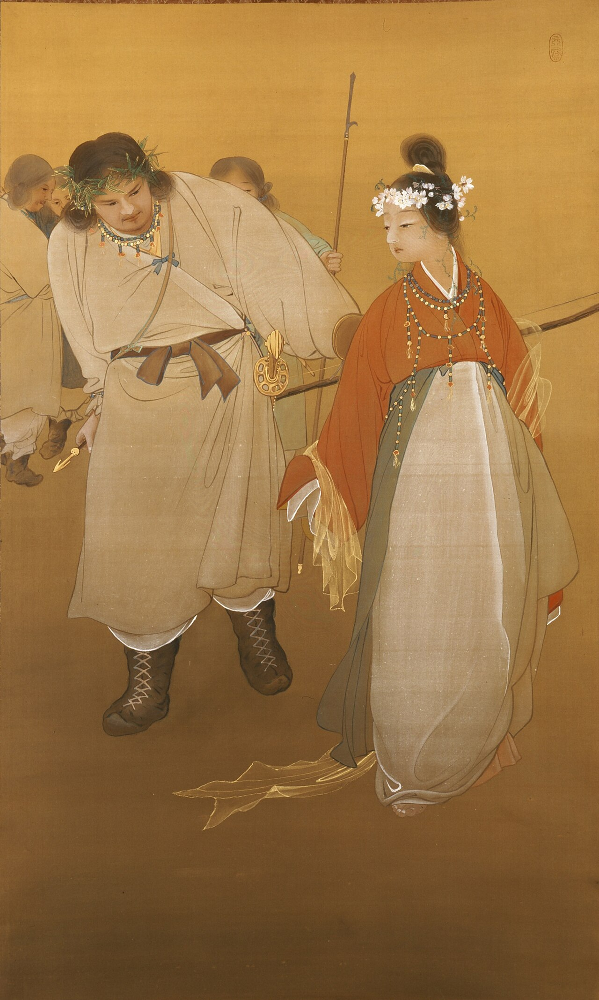
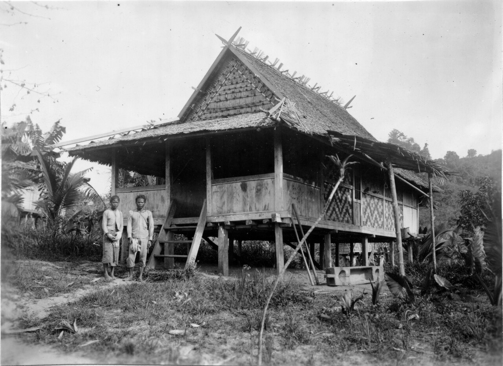
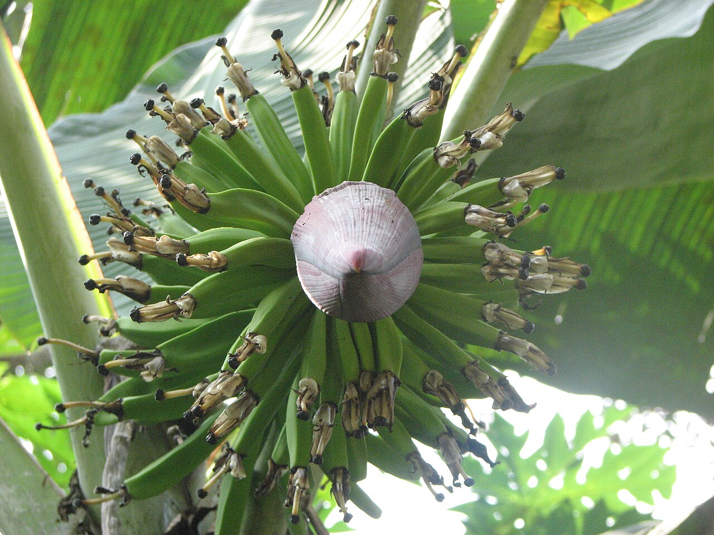
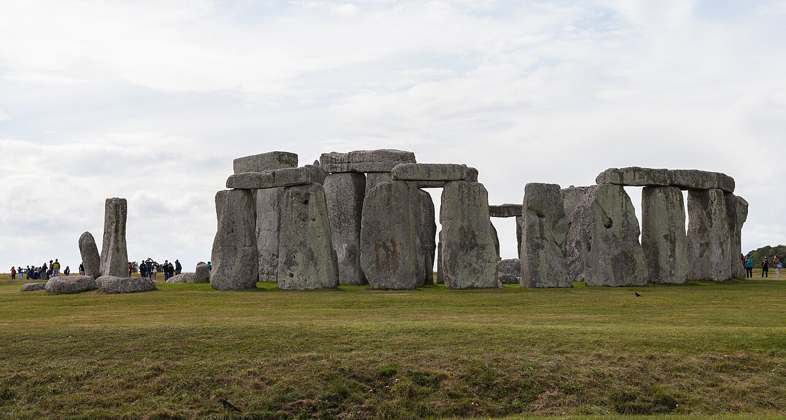

序花嫁は二人いた
九州南端の笠沙の岬で、天から降りたばかりの邇々芸命は一人の娘に目をとめた。山の神・大山津見神の娘、木花之佐久夜毘売である。結婚を申し入れると、父神は大いに喜び、姉の石長比売を添えて二人を差し出した。邇々芸は姉を送り返す。理由は一語、「甚凶醜（いとみにく）きに因りて」。
返された側の代価は、父の口から長々と語られる。石長比売を置けば天つ神の御子の命は「雪零り風吹くとも、恒に石の如くして、常はに堅はに動かず」、木花之佐久夜毘売を置けば「木の花の栄ゆるが如く栄え」る。そう誓って二人を並べたのに、石は返された。だから御子の命は「木の花のあまひのみ」となる。地の文が物語の時間を突き抜けて言い切る。「故、是を以て今に至るまで、天皇命等の御命長くあらぬぞ」。

奇妙なのは、同じ上巻の末尾である。石を返した邇々芸の子、火遠理命は、高千穂の宮に「伍佰捌拾歳」――五百八十年坐したと記される。中巻に入れば神武天皇は百三十七歳、崇神天皇は百六十八歳。長くあらぬはずの御命が、百年を軽々と超えていく。
古事記がいう「長さ」は、年数のことではないらしい。
一綱の先の石
二つのものを並べられ、石のほうを拒んだために死ぬようになった――この形の話は、日本列島だけのものではない。
イギリスの人類学者フレイザーは『不死の信仰と死者の崇拝』第一巻（1913）で、世界各地の死の起源の話を、月の満ち欠けの型、蛇の脱皮の型などに分け、その一つを「バナナ型」と名づけた。見本は、オランダの宣教師クロイトの報告から要約した、中部セレベス（スラウェシ）のポソ地方の話である。

はじめ天は地のすぐ近くにあり、創造主は綱の先に贈り物を結んで降ろしていた。ある日降りてきたのは石だった。最初の夫婦は「石をどうしろというのか、別のものを」と叫ぶ。綱が引き上げられ、次にバナナが降りてくる。二人は駆け寄って取る。天の声が告げる。バナナを選んだのだから、お前たちの命はバナナの命のようになる。バナナの木は子ができると親の幹が死ぬ。お前たちも死に、子がその場所を継ぐ。石を選んでいれば、石のように変わらず、死なずにいられたものを。
骨組みは笠沙と同じだ。差し出された二つのもの。片方は石。石を拒んだ者の命は、受け取ったほうの命の形をとる。のちに大林太良らが、石長比売の話をこのバナナ型の一つとして論じている。
違うのは、誰が死ぬかである。ポソで死ぬのは人類のすべて。笠沙で限りある命を負うのは「天皇命等」だけだ。
日本書紀はこの二つのあいだで揺れている。巻二、天孫降臨の段の一書第二で、返された磐長姫は恥じて呪う。妹だけを召したから、生まれる子は必ず木の花のように移ろい落ちる――呪われるのは天孫の子、王の系譜である。ところが同じ一書は「一に云はく」として別の伝えを続ける。磐長姫は唾を吐き泣いて言った、「顕見蒼生（うつしきあをひとくさ）は、木の花の如く、俄に遷転（うつろ）ひて衰去へなむ」。この世の人間はみな、花のようにたちまち衰える。「此れ世の人の短折（いのちみじか）き縁なり」。
書紀は王の死と人の死を一つの一書に並べ、どちらとも決めない。古事記は決めた。人類の死の神話になりえた話を天皇の死の神話として引き受け、「今に至るまで」と編者の現在に釘で留めた。世界の起源を天皇の起源へ縮める天皇神話の手つきが、この一行ほど露骨に見える場所は少ない。
二死ぬのは幹だけ
ポソの天の声は、植物については半分しか正しくない。
バナナは木ではない。幹に見えるのは、葉の付け根の鞘が何重にも巻き重なった「偽茎」で、その芯を花茎が上ってきて、一度だけ房をつける。実を取られた偽茎は、もう二度と実らない。農家はそれを切り倒す。だが倒されるのは地上の部分だけで、根元の地下茎は生きており、脇からすでに次の芽――吸芽――を出している。いちばん勢いのよい一本が残され、次の偽茎になる。

個体に見えていたものは、本体ではなかった。本体は土の中にあり、偽茎は一本ずつ交替で地上に出てくる顔にすぎない。
古事記の「天皇命等」は、この偽茎にあたる。一度だけ実り、倒れる。地下で続いているものには、序文が名前を与えている。天武天皇が稗田阿礼に誦み習わせた「帝皇日継（すめらみことのひつぎ）」――皇位が次々に受け継がれていくこと、その系譜である。御命が長くあらぬのは偽茎であり、日継は地下茎の側にある。百三十七歳も五百八十歳も、偽茎の背丈にすぎない。
三バナナではない系譜
ただし、この見立ては途中で折れる。
吸芽は親株の分身で、遺伝的には同じものだ。店に並ぶ黄色いバナナの大半は種をつくらず、株分けだけで殖やされてきた。同じものしかない畑は、一つの病気でまとめて倒れる。20世紀半ばまで輸出の主役だったグロ・ミシェル種は、土壌の病原菌によるパナマ病で畑ごと消え、いまのキャベンディッシュ種もその新しい型におびえている。
天孫の家は、同じものの株替わりでは続かない。邇々芸は山の神の娘をめとる。その子の火遠理命は海の神の娘、豊玉毘売をめとる。豊玉毘売が海へ帰ると、その妹の玉依毘売が地上へ来て子を育て、その子の妻となる。山の血を一代、海の血を二代、外から迎えて、ようやく神武天皇が生まれる。
そう見ると、笠沙で何が選ばれたのかが言い直せる。石長比売も木花之佐久夜毘売も、同じ父が差し出した外の花嫁である。選ばれたのは花嫁ではなく、命の性質だった。石は「常はに」――一つの身体が変わらずにありつづけること。木の花は「栄ゆる」――一輪は散るが、木は季節ごとに咲きなおすこと。天孫は、一人の王が変わらずにありつづける道を返し、散っては咲きなおす道を受け取った。そして咲きなおすたびに、外から花嫁を迎える。編者がそこまで意図したかどうかより、上巻の系譜が現にその形で組まれていることのほうが重い。
四死なない王
正反対の答えを出した王権がある。
歴史家カントーロヴィチの『王の二つの身体』（1957）は、16世紀イングランドの法律家たちの理屈を掘り起こした。王には二つの身体がある。病み、老い、死ぬ「自然の身体」と、目に見えず、誤らず、死なない「政治の身体」。王個人が死んでも、王位は一瞬も途切れない。フランスで王の死を告げるときの決まり文句「王は死んだ、王万歳」も、同じ考えの上に立つ。

この王権は石を選んだ。死なない身体という法の虚構をこしらえ、王の内側に住まわせた。古事記は石を返し、王の死を神話の側で先に認めた。不死をどこに置くかという同じ問いに、一方は王の身体の内側と答え、もう一方は身体の外、花嫁から花嫁へと咲きなおす系譜の中と答えた。
結日継
笠沙の岬で、石長比売は父のもとへ帰された。「常はに堅はに動かず」は返され、「木の花のあまひのみ」が残った。「あまひ」の意味はいまも定まらない。ただ、一度だけ実って切り倒される偽茎を見たあとでは、一輪の花が咲いて散るまでの時間として読むほかなくなる。
「御命長くあらぬ」とは、年数が短いことではなかった。五百八十年生きても、終わりがあること。石のように「常はに」ではないこと。終わりがあるから、次の代が立つ。古事記の天皇神話にとって、王の死は欠陥ではなく、日継が日継であるための条件だった。
上巻と中巻に並ぶ「某を娶して生みませる御子」の列挙は、名前の羅列に見える。だがそれは、散っては咲きなおす花の記録であり、そのたびに迎えられた花嫁の名簿である。
石は変わらずに残る。花は散るから、次が咲く。
本棚このコラムの書架
参照した本 ── 本文が依拠した原典
- 『古事記』上巻・中巻 712年石長比売の段、火遠理命の580歳、中巻の天皇の年齢。真福寺本系の公開本文（ウィキソース中国語版）で確認した。
- 『日本書紀』巻二 神代下 第九段 一書第二 720年磐長姫の呪詛と「一云」の「顕見蒼生」。同じく公開本文で確認した。
- J. G. Frazer, The Belief in Immortality and the Worship of the Dead, vol. 1 London: Macmillan, 1913「バナナ型」とポソの話（Kruijt 1894 による）。Project Gutenberg 版で該当箇所を読んだ。
- E. H. Kantorowicz, The King's Two Bodies Princeton University Press, 1957四章の「王の二つの身体」。
※カントーロヴィチと大林太良は通読しておらず、広く知られた要旨にもとづく。
参考図書 ── さらに読むために
- 神野志隆光『古事記と日本書紀』 講談社現代新書、1999記紀を「一つの日本神話」ではなく別々の作品として読む。講義§1が参照を指示している本。
- 大林太良『日本神話の起源』 角川書店、1961日本神話を東南アジア・太平洋の神話と比べる古典的な研究。石長比売の話をバナナ型の死の起源神話と比べる議論でも知られる。
図版の出典
- 冒頭：File:Banana inflorescence.JPG（Anton 17、CC BY-SA 4.0。縮小のみ）
- 序：File:Ninigi and Sakuyahime.jpg（石井林響、パブリックドメイン。題名・所蔵は Commons に記載なし）
- 一：Walter Kaudern 撮影、ポソ地方の住居（スウェーデン世界文化博物館、パブリックドメイン）
- 二：File:Banana fruit and inflorescence.jpg（Praveenp、CC BY-SA 3.0。縮小のみ）
- 四：Stonehenge, 2014（Diego Delso、CC BY-SA 4.0。縮小のみ）


事実確認に用いた資料
- ウィキソース「古事記/上卷」・「中卷」：石長比売の段の原文、火遠理命「伍佰捌拾歳」、神武137・崇神168・垂仁153・応神130歳。
- ウィキソース「日本書紀/卷第二」：第九段一書第二の磐長姫の詛と「一云…顕見蒼生…此世人短折之縁也」。
- Project Gutenberg #20116：Frazer の「Banana type」の命名と、ポソの話の要約（脚注で A. C. Kruijt, 1894, p. 340 を典拠とする）。